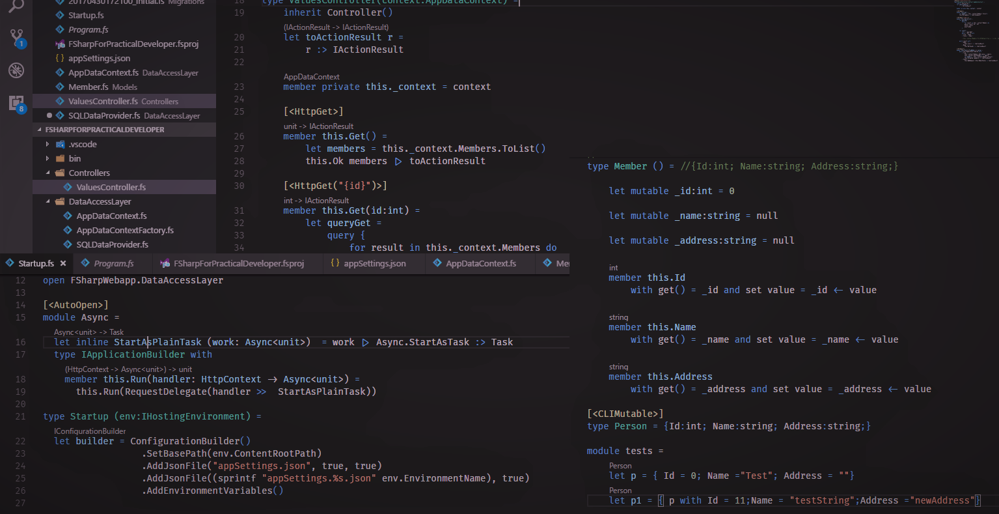

 FSharp and Azure Functions example this is a little tutorial demonstrating the usage of F# language, and ADO.Net as data access mechanism, and also substituting it with a new… a day ago Mouad Cherkaoui FSharp, Getting Started, F#